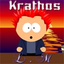
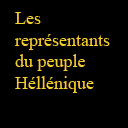
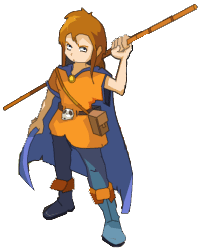
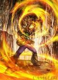
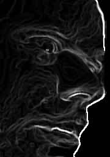
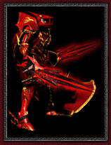

Forums galactiques > Assemblée Galactique : diplomatie officielle > [NRE]Vote : Conseil de Sécurité - Poste Guilde
Smileyoyo4 | 16 | |
Cosmic Roger | 12 | |
Ghislynx | 14 | |
Vote blanc | 4 | |
Total : 46 vote(s) | ||
| New Republik Respect diplomatique : 859 23/12 ETU 09:11 | Score : 3 Détails Une nouvelle salle vient d'ouvrir, découpée en trois parties, cette salle accueille les premières élections du Conseil de Sécurité.
A l'entrée, on peut voir la liste des candidats pour chaque poste et une hôtesse ... charmante hôtesse ... redirige les Citoyens vers la bonne direction en fonction de leur faction. Au fond de la salle, sur un écran mural, on peut relire ce que le New Republik Act comporte au sujet du Conseil de Sécurité : Conseil de sécurité Un conseil de sécurité de 3 membres sera désigné. Chaque faction devra y être représentée. Ce conseil sera élu au suffrage universel. Il devra décider et surtout coordonner, avec l'administration de New Republik, des éventuelles actions militaires ou procédures d'exclusion. Si une action du conseil de sécurité ne plaisait pas aux Citoyens, ils pourraient organiser une initiative populaire, réunissant au moins 25% d'entre eux pour proposer un vote interdisant cette action. L'issue de ce referendum faisant alors foi. Enfin, le Conseil de sécurité aura le pouvoir d'intervenir dans l'agenda des votations de manière exceptionnelle afin de soumettre aux Citoyens un objet de votation s'il estime que c'est nécessaire et urgent. Une telle procédure donnera lieu a un vote rapide d'une durée de un jour. A l'approche des urnes pour élire le poste de la Guilde, un agent de l'Administration revérifie une énième fois les papiers des commandants. Au dessus des machines de votes, la liste des candidats a été affichée : - Commandant Smileyoyo4, - Commandant Cosmic Roger, - Commandant Ghislynx. Une fois que le commandant a voté, un autre agent rajoute le nom du commandant et signal qu'il a voté. Rappel du New Republik Act : Chaque Citoyen aura l'obligation de participer au vote. Lors de telles occasions, il mentionnera « à voté » dans la salle dédiée au vote afin de s'en assurer. En cas de trop nombreuse absences injustifiée le commandant concerné pourra être exclu. Précision : le but est d'avoir une démocratie vivante, pas de jouer les pères fouettards... Le vote durera 3 jours exceptionnellement. (au lieu de 2 normalement) | ||
| smileyoyo4 Respect diplomatique : 664  23/12 ETU 09:14  | Score : 0 Détails A voté
| ||
| Krathos Respect diplomatique : 75  23/12 ETU 09:14 | Score : 0 Détails A voté!
| ||
| Caleb Wollstonecraft Respect diplomatique : 463  23/12 ETU 09:16 | Score : 0 Détails Le peuple Héllénique a voté
| ||
| Ellys Respect diplomatique : 1592  23/12 ETU 09:17 | Score : 0 Détails A voté
| ||
| andeman Respect diplomatique : 1393  23/12 ETU 09:31 | Score : 0 Détails A voté!
| ||
| U-C Respect diplomatique : -1  23/12 ETU 09:34 | Score : -1 Détails A encore voté.
| ||
| Aershak Respect diplomatique : 191 23/12 ETU 09:48 | Score : 0 Détails A voté.
| ||
| nemusar Respect diplomatique : 303  23/12 ETU 10:44 | Score : 0 Détails a voté
| ||
| I Aelina I Respect diplomatique : 330  23/12 ETU 11:06 | Score : 0 Détails A voté.
| ||
| Salik Respect diplomatique : 8  23/12 ETU 11:38 | Score : 0 Détails A voté
| ||
| Nicanor de Rokha Respect diplomatique : 2498  23/12 ETU 12:07 | Score : 0 Détails Les Soviets ont voté.
| ||
| Cosmic Roger Respect diplomatique : 511  23/12 ETU 13:04 | Score : 0 Détails a voté
| ||
| Yoh Respect diplomatique : 390  23/12 ETU 13:30 | Score : 0 Détails Une voix sortie de nulle part annonça d'un ton clair:
"A voté." | ||
| Vlavv Respect diplomatique : 155  23/12 ETU 13:32 | Score : 0 Détails A voté !
| ||
| Acanith Respect diplomatique : 1200  23/12 ETU 13:35 | Score : 0 Détails A voté
| ||
| repliquant Respect diplomatique : 4  23/12 ETU 14:52 | Score : -6 Détails A voté!
| ||
| Mendax Respect diplomatique : 11 23/12 ETU 15:40 | Score : 0 Détails A voter pour le bien de l'humanité.
Au ! Une rime ! | ||
| Firefly Respect diplomatique : 106 23/12 ETU 15:57 | Score : 0 Détails Nous avons voté, deux votes en un.
Au fait, je voudrais savoir pourquoi on moinsse certains... Alors qu'ils n'ont mis que a voté... | ||
| Vlavv Respect diplomatique : 155 23/12 ETU 16:05 | Score : 1 Détails C'est parce qu'ils n'auraient pas dû voter, n'étant point citoyens.
|
Forums galactiques > Assemblée Galactique : diplomatie officielle > [NRE]Vote : Conseil de Sécurité - Poste Guilde